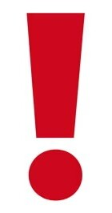

Understanding Onychomycosis (Feet Fungus): Know the Risks and Recognize the Signs
Onychomycosis, commonly known as feet fungus, is a fungal infection affecting the toenails or
fingernails. It often begins as a white or yellow spot under the tip of the nail and can cause
the nail to become discolored, thickened, and brittle over time.
Recognizing the early symptoms can lead to proactive care:
-
Nail Discoloration: The initial sign of onychomycosis is often a change in the
color
of the nail, typically appearing white, yellow, or brown.
-
Thickening of the Nail: Infected nails may thicken and become brittle, making
them
more prone to crumbling or breaking.
-
Distorted Nail Shape: The fungus can cause the nail to take on an irregular
shape,
becoming distorted or misshapen.
-
Brittle or Crumbly Texture: The affected nail may become brittle or crumbly at
the edges, leading to a loss of its normal structure.
-
Pain or Discomfort: In some cases, onychomycosis can cause pain or discomfort,
especially when wearing shoes or walking.
